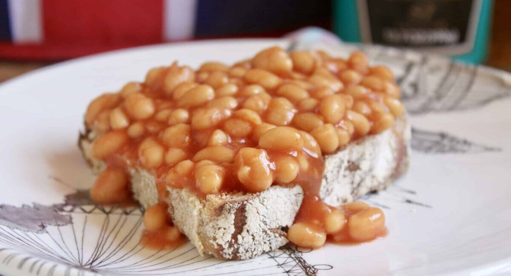

Beans on Toast

Description
A childhood favourite which always hits the spot.
Ingredients
- Tinned Beans in tomato sauce
- 3 slices of bread
Steps
- Open your tinned beans and put into a microwavable container
- Heat in the microwave on full power for 2 minutes
- While they are cooking place your bread in the toaster and toast until golden brown
- Stir the beans and heat in the microwave for a further minute
- Stir and leave to stand for a minute
- Place the toasted bread carefully on your plate before drowning the slices in beans and sauce
- Enjoy